VIDEO CHAT / 使用与部署记录
视频通话教程
本栏目只记录视频项目的使用、独立部署和排查过程。更新日期：2026-09-15。
正式入口：https://video.shanbo-rig.com/ · HTTPS 已启用，HTTP 域名访问自动跳转。
译文朗读：男女声、语言与音色
- 电脑和手机先刷新页面，加入房间，点击底部「🔊 译文朗读」。
- 选择朗读目标语言、女声/男声，再选择设备提供的具体音色；可调语速和音量。先点击「试听所选声音」，再勾选「自动朗读对方的新字幕」。每次重新打开页面默认关闭，避免突然出声。
- 只朗读对方新发来的字幕，历史字幕不自动播放。对方的译文语言不同于你选择的语言时，会把原文再次交给 DeepSeek 翻译成你指定的语言，不影响对方设置。
- 建议选择「低延迟 · 本机音色优先」。在线音色只在设备实际提供时可选，不代表固定音质档位；具体音质由操作系统声音决定。语音库没有对应语言或指定男女声时会明确提示，可选「全部声音」试听，或安装系统语音包。不会用变调冒充男女声。
- 朗读时暂时关闭本机麦克风音轨、暂停字幕识别，防止扬声器声音回录成字幕；结束后恢复原有静音状态。建议戴耳机。需要随时说话时，点击「停止并关闭朗读」。退出房间立即清空朗读队列。
3 秒目标与实测
完整耗时包括说话断句、浏览器语音识别、DeepSeek 翻译、传输和语音合成。以约 3 秒起声为优化目标，不能保证每次达成。界面单独显示「收到字幕→起声」，不包含发送方识别与翻译耗时。为减少积压，最多等待两条，过期内容跳过。
2026-09-15 公网短句测试：DeepSeek 英译中请求约 780 毫秒；接收端收到译文后约 0.1 秒触发朗读开始，并收到完成事件。此测试输入为文字，不是说话到声音的端到端测量。当前测试电脑的中文女声 Huihui、男声 Kangkang 均完成试听；手机截图为 390 像素响应式布局验收，实际手机音色和扬声器效果仍需真机复测。
手机间歇杂音的已知原因与检测
确认旧版把对方的每条字幕当聊天消息，播放一次 880 Hz 提示音，导致字幕持续出现时反复响。新版取消字幕提示音。麦克风请求显式启用回声消除、降噪和自动增益；实际支持情况由浏览器决定。
若还有爆音、断续或回声，在朗读设置展开「杂音与网络检测」，通话中点击检测，可查看约 2 秒音频丢包变化、抖动、往返延迟和麦克风处理状态。检测只读统计，不录音、不上传声音。统计不能证明所有杂音来源；网络较差时先关闭代理比较，回声时降低扬声器音量、两台设备拉开距离并戴耳机。
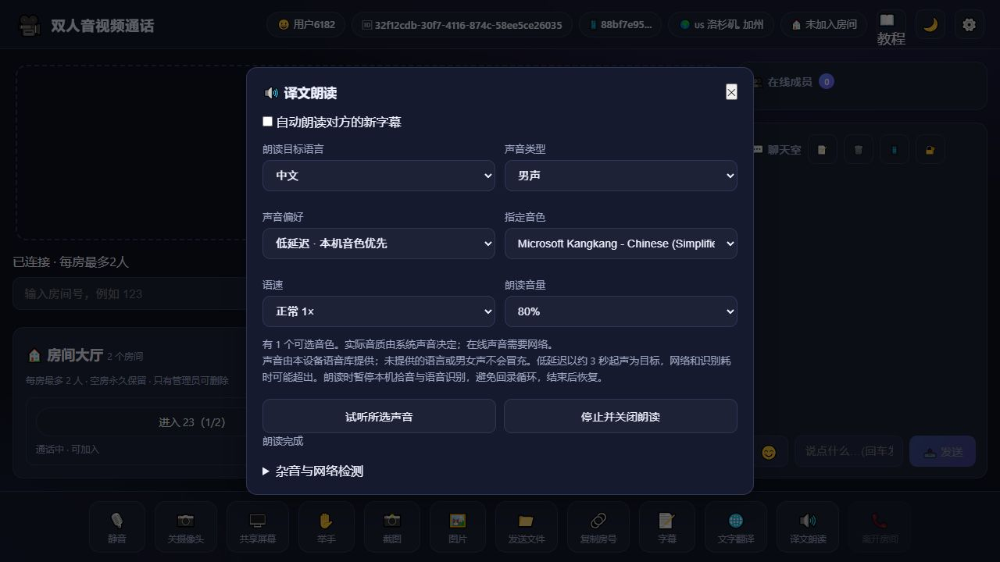
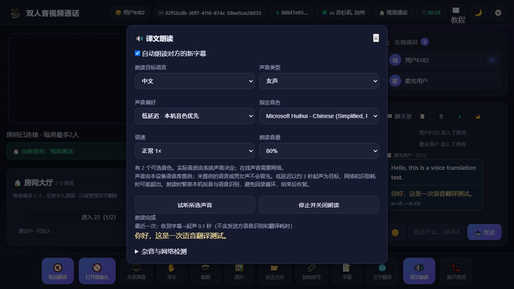
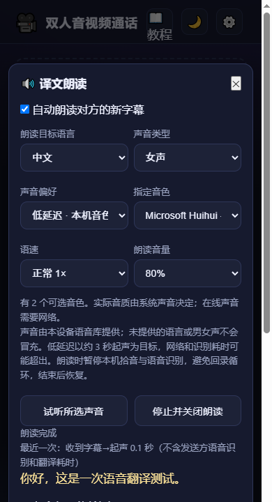
稳定版本已先备份到 GitHub 标签 backup/stable-20260915-before-voice（提交 06eebed）。服务器私有归档 /www/backup/webrtc-video/stable-06eebed/project-and-config.tgz 已验证可读取；含环境配置，不能公开上传。此次前端修改备份在 /www/backup/webrtc-video/20260915-voice，版本 20260915-voice1。17 项字幕、播放与朗读测试通过。
房间大厅：空房保留、管理员删除（最新规则）
所有已创建房间显示在首页大厅，包含房间号、密码标记、实时人数和空闲/通话中/满员状态。每房最多 2 人；在房间内也可以查看大厅，切换房间前先退出当前房间。
- 退出、断网、关闭页面只清除在线成员，空房显示 0/2 并保留，可以再次加入。
- 房间号和房间密码持久保存，视频服务重启后仍在；在线成员不写入文件，因此重启不会出现旧成员残留。
- 点击大厅「房间管理」，使用管理员身份登录。登录后大厅各房间出现「删除房间」按钮，也可在管理面板输入房间号删除。
- 普通用户可以创建和加入房间，不能删除房间。服务器会校验管理员令牌、有效期及其所属连接，不能仅凭前端显示绕过权限。
- 管理员删除需确认，会移出成员并删除该房间与聊天记录。再次重启不会恢复已删除房间。
此规则替代早期版本的「空房自动删除」。升级时旧版本在线房间列表为空，因此没有可迁移的活动房间；已创建默认「视频通话」房间并退出，现以 0/2 保留供使用。
验证：两人容量、断网清人、空房保留、密码保留、应用重启后恢复、非管理员拒绝、管理员删除后重启不恢复均通过；14 项应用冒烟测试通过。公网大厅已显示空闲房间和管理员入口。
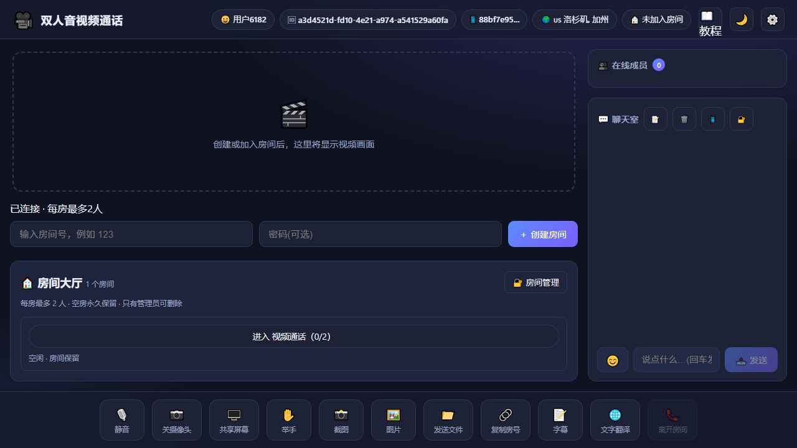
当前所有者管理方式
当前管理员访问白名单仅允许服务器本机（127.0.0.1 / ::1），所以电脑直接点击网页管理登录会被拒绝。所有者可使用已有宝塔 root 终端管理；下列命令内部读取服务器管理员配置，不输出密码。
cd /www/wwwroot/webrtc-video-chat node deploy/manage-rooms.cjs list # 确定删除时，将“房间号”替换为目标房间；包含空格时加引号 node deploy/manage-rooms.cjs delete "房间号" --confirm
删除命令会移出成员并删除对应房间和聊天记录。若需要从电脑网页管理，可明确授权管理电脑的公网 IP 加入管理员白名单，密码仍需验证。
房间文件：/var/lib/webrtc-video/rooms.json，仅保存房间定义，不保存在线成员，权限 600。备份：/www/backup/webrtc-video/20260915-lobby。版本：20260915-lobby1。管理员密码与访问 IP 限制沿用原有服务配置，不在公开教程中展示。
01 · 开始使用
- 打开首页，在设置中填写昵称。
- 输入房间号和可选密码，创建房间；另一位参与者选择相同房间加入。
- 在聊天室发送文字，验证成员列表和消息同步。
- 通过 HTTPS 或本机 localhost 访问时，允许浏览器使用摄像头和麦克风，再测试静音、摄像头、屏幕共享。
- 字幕翻译选择 DeepSeek，密钥已经由管理员配置在服务器。按自己的说话语言选择源语言、按希望输出的语言选择目标语言，然后保存设置并开启字幕。
正式域名 HTTPS 已启用，浏览器可在安全上下文中申请媒体权限。首页、聊天室与加密信令已验证；双设备摄像头、麦克风、屏幕共享和跨网络媒体通话仍需实际测试。IP + HTTP 仅保留为基础连通性测试入口。
手机视频正常，但看不到电脑字幕（2026-09-15 修复）
已修复接收显示：旧版把对方双语字幕只放进聊天室，没有显示在手机画面上。新版收到同房间对方的字幕后，自动显示浮动字幕卡，包含说话人、原文和译文；12 秒后隐藏，完整内容继续保留在聊天室。离开房间立即清空，忽略其他房间的迟到字幕。
- 电脑和手机都刷新网站，再加入同一个房间。
- 电脑开启「字幕」，选择正确的说话语言和翻译目标语言。
- 手机只需正常进房：接收电脑字幕无需打开手机「字幕」按钮，也不依赖手机浏览器的语音识别服务。
- 手机上的「字幕」按钮负责识别手机使用者自己说的话。若提示识别未启动，仍然可以接收电脑字幕；手机自己发言可暂用「文字翻译」及输入法语音输入。国内连续语音识别尚未接入。
- 用户实测本次黑屏在关闭代理后恢复正常。可使用已验证能通话的直连网络；网页视频连接、浏览器语音识别与文字翻译是不同链路。
本次验证：11 项字幕、文字翻译与播放恢复测试通过，14 项应用冒烟检查通过；公网真实 DeepSeek 翻译经房间转发后，在未开启语音识别的接收页面自动显示，离开房间后隐藏。下图为桌面浏览器模拟手机宽度，并未代替真实手机复测。
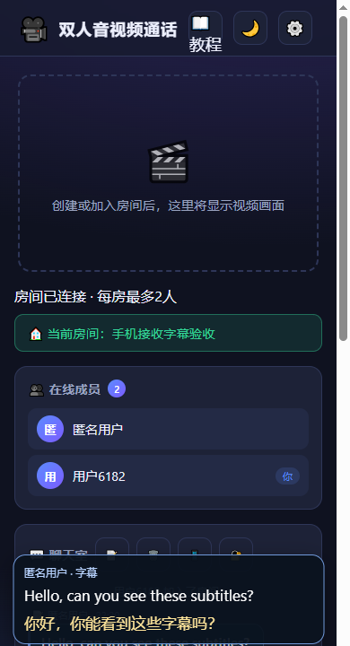
媒体自动播放受限时增加「点击播放画面和声音」按钮。应用版本：20260915-media1；回滚副本：/www/backup/webrtc-video/20260915-received-captions。此次只重启视频项目。
双人房间与掉线自动退出
每房最多两人。主动离开及时移除在线成员；设备检测到离线时退出，突然失联由服务器心跳检测，通常约 15 秒确认。网络恢复只连接大厅，需要本人重新加入。每 5 秒及切回页面时校验房间状态。
空房不再删除：0 人房间继续显示在大厅，只有管理员可以删除，完整规则见房间大厅。
历史断网验证：公网不回应心跳的连接约 13.6 秒被移除，两端人数从 2 同步为 1；真实手机还需结合实际网络复测。
手机能视频通话，但字幕一直等待？
视频、聊天、语音识别和文字翻译是不同的连接。视频和房间消息正常，只能证明站点与通话连接已建立；手机一直显示等待语音时，通常还没有拿到识别文字，DeepSeek 还没有收到翻译请求。
当前连续语音字幕使用浏览器 Web Speech API。Chrome 等浏览器可能把音频交给在线识别服务，手机的网络、浏览器版本、麦克风权限和源语言都可能影响结果。手机直连下识别服务可能无法访问，仅凭页面截图不能确定唯一原因。浏览器语音识别说明
- 先刷新网站，确认源语言与说话语言一致；允许网页使用麦克风。
- 开启字幕后，界面区分「启动识别」「麦克风已启动」「检测到语音」「收到识别结果」。18 秒无文字时提示排查，45 秒无文字时暂停；连续三次网络错误会停止重试。没有文字时不再显示空黑色字幕框。
- 手机可点击底栏「文字翻译」，点击输入框，使用手机输入法自带的语音输入，或直接打字。输入法语音能力由手机及其服务提供，本项目不保证每个输入法都支持离线识别。
- 点击「翻译」先预览；确认后点击「发送双语字幕到房间」。此路径不调用网页 SpeechRecognition，由本站服务器调用 DeepSeek。
- 要在国内网络下实现更稳定的连续自动语音字幕，需要另外配置国内语音识别服务（如阿里云百炼）。DeepSeek 的 Key 用于文字翻译，不能代替语音识别 Key。当前尚未接入国内语音识别，不应把文字翻译成功视为该功能已完成。
本次验证：14 项字幕与翻译回归测试通过；390 × 844 手机宽度下的弹窗、真实 DeepSeek 译文、预览后发送和历史字幕显示通过。测试使用桌面浏览器模拟手机宽度，未替代真实手机、输入法或国内运营商网络验收。
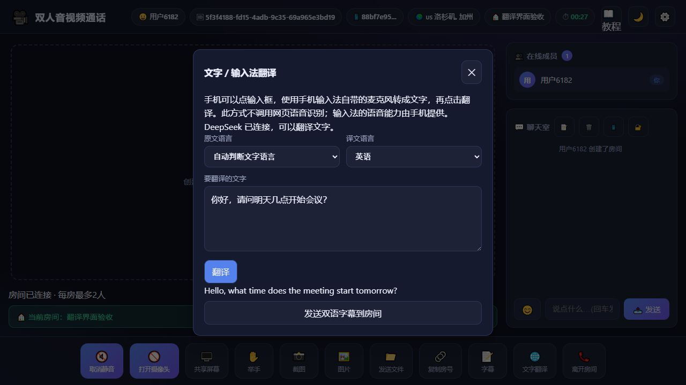
此次仅更新视频前端与测试文件，未重启服务。回滚副本：/www/backup/webrtc-video/20260915-mobile。
DeepSeek 字幕翻译（2026-09-15 更新）
- 刷新页面（旧页面可按 Ctrl+F5），进入设置，确认显示「DeepSeek 已配置」。
- 选择源语言和目标语言，例如中文 → 英语。浏览器识别需要明确的说话语言，原来的「自动检测」不再用于语音识别。
- 加入房间，点击底部「字幕」。每位发言者在自己的设备开启字幕，允许浏览器麦克风权限；先显示识别原文，再显示 DeepSeek 译文，并共享到房间聊天记录。
- 不方便使用麦克风时，在设置下方「文字翻译」输入短句并点击翻译；结果也会发到房间。两端语言相同时仅保留原文。
- 翻译失败时显示原因并保留原文，不再把原文伪装成译文。余额不足、密钥无效、网络超时会有不同提示。
开启字幕后，浏览器语音识别服务处理语音，DeepSeek 处理识别文字。语音识别质量仍受浏览器、网络、口音与收音影响。文字翻译及房间双语收发已实测，真实麦克风连续识别效果需要在各自设备测试。
此次修复了字幕气泡透明、识别结束未重连、临时字幕不显示、重复提交及旧译文覆盖新句的问题。翻译只处理最终识别结果，串行排队并限制积压。离开房间后不再发送尚未完成的字幕。
服务端使用 deepseek-flash 非思考模式，超时 12 秒，每条最多 1200 字。每连接每分钟最多 30 次翻译，整个视频服务每分钟最多 120 次、最多 4 个同时请求。缓存仅保留本连接最近结果一分钟。额度用于控制实时字幕的调用消耗。
管理员环境项：DEEPSEEK_API_KEY、DEEPSEEK_MODEL，保存于 /etc/webrtc-video.env，权限 600。修改后只重启 webrtc-video。密钥不写进网页、仓库或截图。
更新前备份位于 /www/backup/webrtc-video/20260915-deepseek，仅包含本视频项目此次改动文件及私有环境备份。回滚时按需恢复对应文件后重启本服务，不覆盖其他站点。
验证：原有 14 项测试通过；新增 9 项翻译与字幕回归测试在本地和服务器通过。公网中文→英文、英文→中文及双语房间消息收发通过；首次短句翻译实测约 0.9 秒，该数值不包含语音识别时间，也不代表固定延迟。
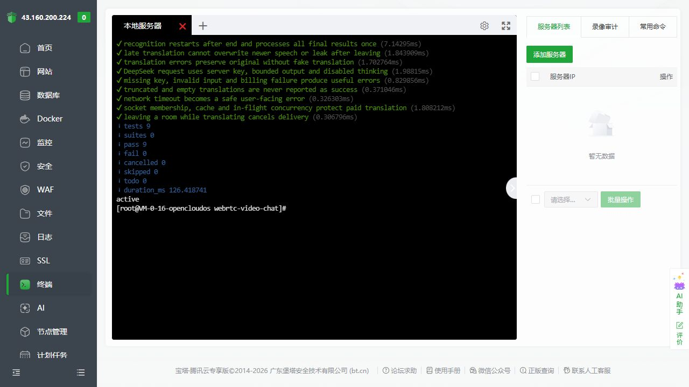
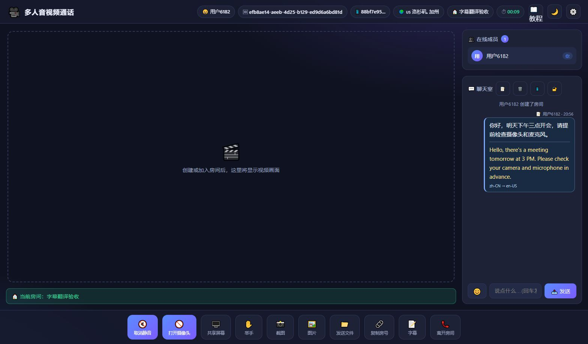
02 · 独立部署配置
| 项目 | 配置 |
|---|---|
| 代码目录 | /www/wwwroot/webrtc-video-chat |
| 服务 / 运行用户 | webrtc-video |
| 内部监听 | 127.0.0.1:3100 |
| 独立数据 | /var/lib/webrtc-video |
| 环境配置 | /etc/webrtc-video.env（仅 root 可读） |
| 正式域名 | video.shanbo-rig.com（HTTPS 已上线） |
- 先检查端口和目标目录是否空闲，确认已有 Nginx 配置检查通过。
- 拉取代码，使用官方源安装生产依赖。
- 配置独立用户、环境变量和 systemd 服务。服务最多使用 512 MB 内存和相当于一个 CPU 核心的额度。
- 独立 Nginx 站点把 HTTP 页面、Socket.IO 与 PeerJS 统一转发到 3100；保留 WebSocket 升级头。
- 先检查 Nginx 配置，再平滑重载，最后验证页面、信令和聊天室。
npm install --omit=dev --package-lock=false --registry=https://registry.npmjs.org systemctl status webrtc-video --no-pager journalctl -u webrtc-video -n 50 --no-pager curl -I http://127.0.0.1:3100/ nginx -t
更新或重启只针对 webrtc-video 服务；不要使用批量重启全部服务的命令。
03 · 本次问题与处理
npm 下载依赖返回 404：服务器默认 registry 指向二进制文件镜像路径，不能用来解析 cors 等 npm 包。安装命令增加 --registry=https://registry.npmjs.org，只影响本次命令。
宝塔终端操作超时：先查看截图确认命令是否已输入或执行，避免重复部署。页面文字读取不到终端内容时，用真实终端截图核对结果。
HTTP 页面反复提示 PeerJS network 错误：旧客户端在标准端口留空时会采用 PeerJS 默认 443 端口。已修复为 HTTP 明确使用 80、HTTPS 使用 443，自定义端口保持原值。
网页打开但信令断开：核对代理的 Upgrade、Connection 头，PeerJS 路径为 /peerjs/peerjs/。本项目使用单端口，不需要另开 9000。
跨网络视频无法连接：HTTPS 与信令正常不代表媒体链路一定可用。需要使用两台设备测试；严格 NAT 网络可能需要单独配置 TURN。
04 · 域名与 HTTPS（已完成）
- DNS A 记录：
video → 43.160.236.132。 - 宝塔「网站 → 反向代理」单独添加
video.shanbo-rig.com，代理地址为http://127.0.0.1:3100，保留 WebSocket 升级头。 - 宝塔「SSL → 免费证书 → 申请证书」选择 Let's Encrypt、文件验证，并勾选视频域名。证书已签发且部署成功，当前证书到期日为 2026-12-14；面板自动续签开关已开启。
- 文件验证目录为
/www/wwwroot/video.shanbo-rig.com/.well-known/acme-challenge/。这不是应用代码目录；保留该目录和宝塔验证配置以支持续签。 - 在视频站点「设置 → SSL → 当前证书」开启强制 HTTPS。公网 HTTP 已验证返回 301 并跳转同域名 HTTPS。
- 客户端正式配置设置域名、端口
443和secure: true；服务环境设置PUBLIC_URL=https://video.shanbo-rig.com。 - 检查配置后平滑重载 Nginx，只重启
webrtc-video。公网 HTTPS、Socket.IO WSS 聊天收发、PeerJS WSS 连接均通过验证。
nginx -t && nginx -s reload systemctl restart webrtc-video systemctl is-active webrtc-video curl -I http://video.shanbo-rig.com/ curl -I https://video.shanbo-rig.com/
域名站点配置：/www/server/panel/vhost/nginx/video.shanbo-rig.com.conf。旧 webrtc-video.conf 仅保留 IP，不重复绑定正式域名。证书由宝塔管理，不要用其他配置模板覆盖现有站点。
接下来可用两台设备打开正式入口，允许各自浏览器的媒体权限，测试摄像头、麦克风与屏幕共享。严格 NAT 网络下可能仍需 TURN。
05 · 截图记录
服务器 14 项冒烟测试全部通过；公网首页、教程、PeerJS ID 接口返回 200，两个客户端的聊天消息收发及两条 WebSocket 信令检查通过。以下为实际部署截图，不包含密码或密钥。
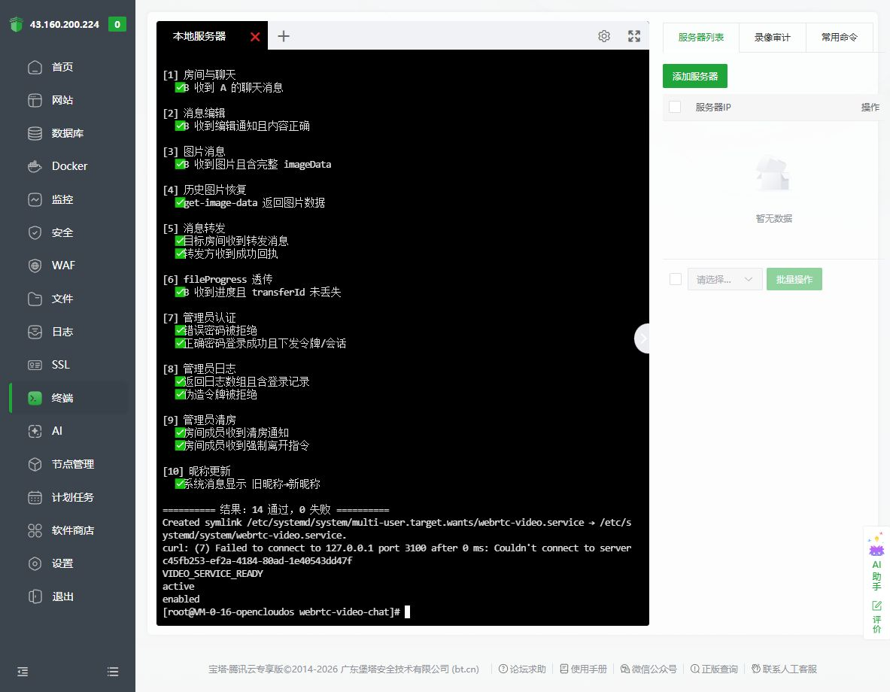
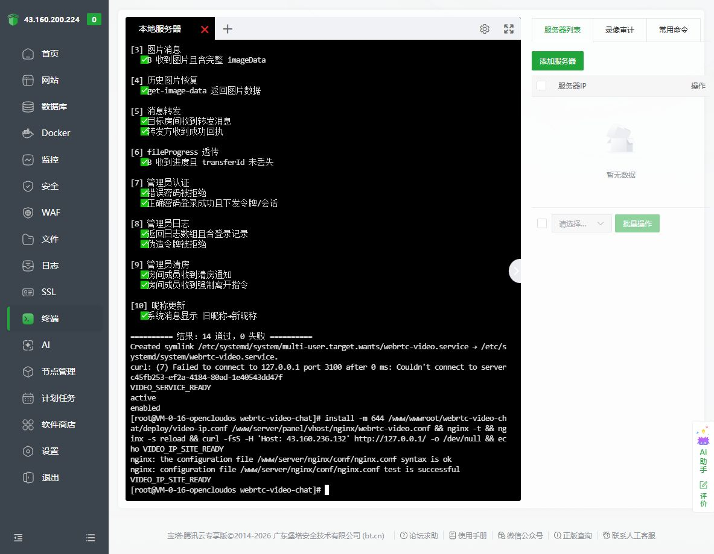
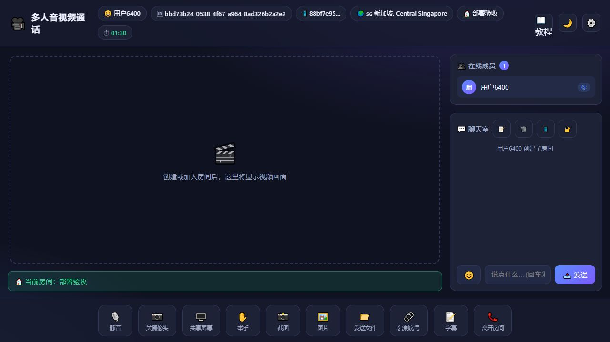
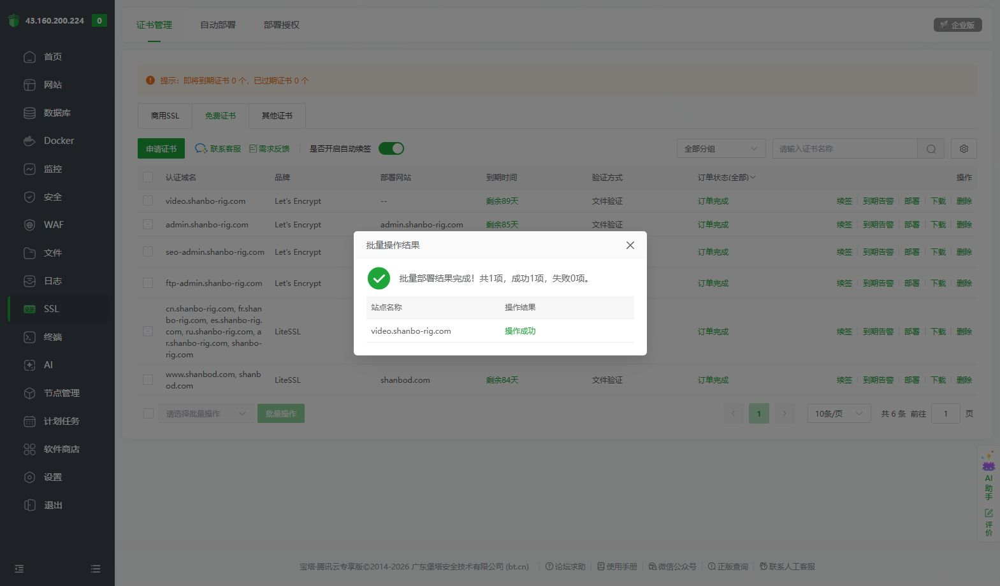
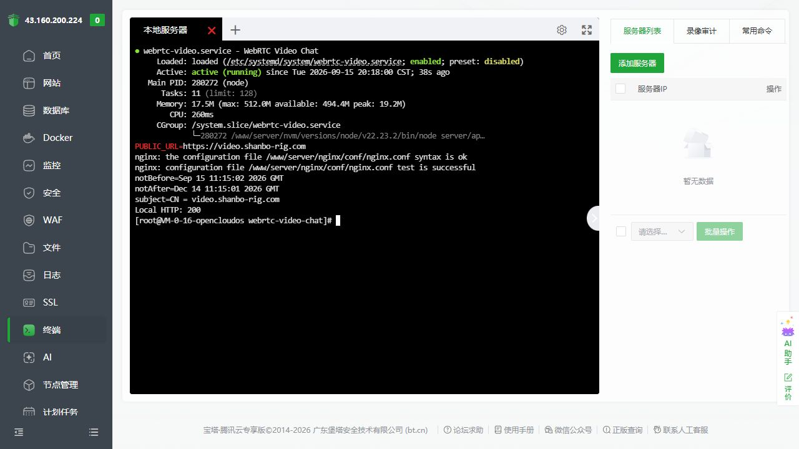
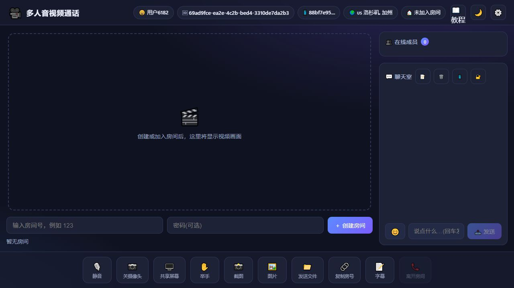